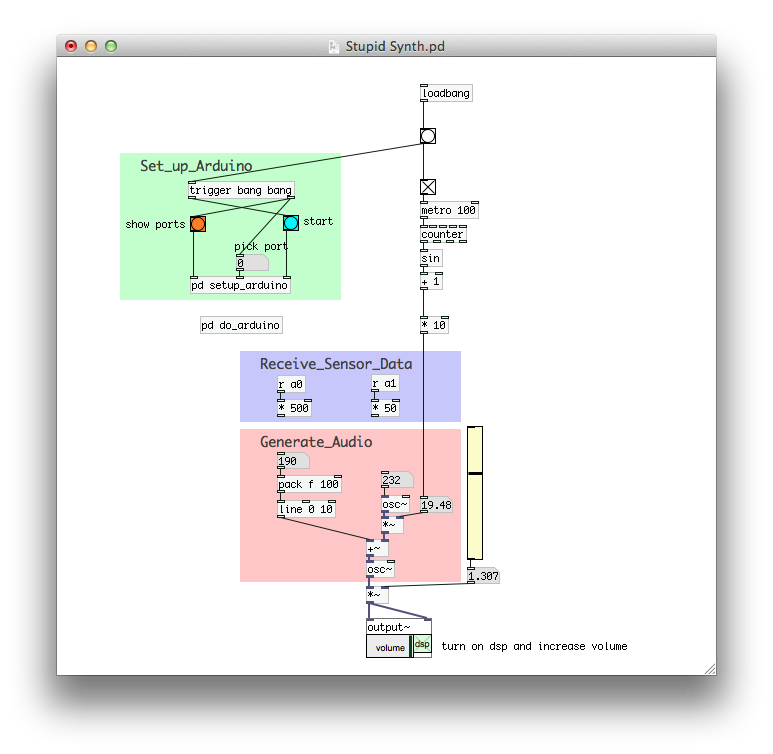
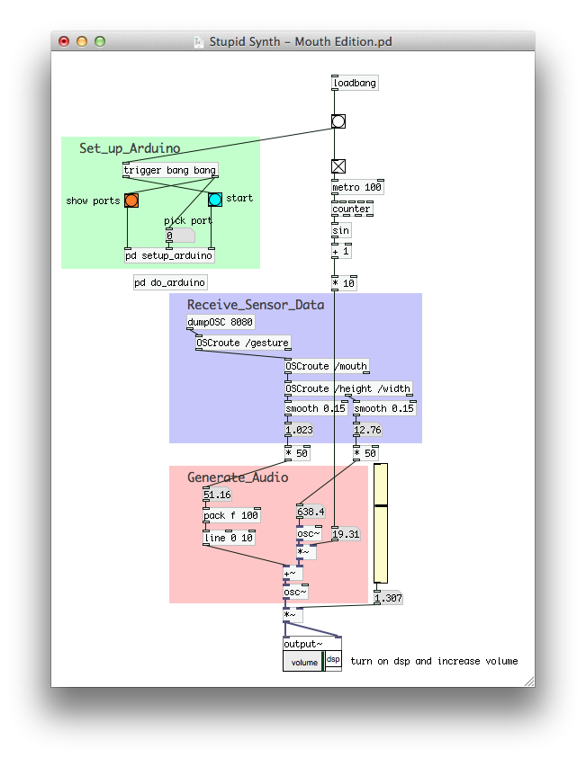

We’re always keen to look at new and interesting stuff at Manchester CoderDojo. Dave takes us through one…
Pure Data is a visual programming language, using wiring as a way to programme. It excels at working with audio, MIDI, and can handle cameras, 3d graphics, and network connectivity as well. It is free and open source software, running well on Linux, Windows and OSX.
Pure Data is designed to be extensible, so much so that the core (‘vanilla’) version itself isn’t much use. A version called ‘Pd-extended’ is the preferred distribution, coming configured with many of the main extensions already set up. It can be downloaded from puredata.info/downloads/pd-extended – OSX users will also need to install XQuartz , a small extension originally distributed by Apple.
Pure Data was originally developed to process digital audio, but it is equally good at working with sensors and inputs. It’s a no-code approach to Arduino programming for one, and provides you a much richer and easier-to-understand environment to try things out in, without the usual Arduino code-upload-debug cycle.
Pure Data can also talk to the rest of your system – whether that’s generate sound, play video, record audio, act as a network server, use dropbox, run python scripts or interface with hardware. The patch-based approach makes it easy to experiment and try things out, and lends itself to spatial thinkers – Pure Data programming isn’t about typing and debugging. It’s great to prototype systems and model how they work quickly.
Pure Data makes it easy to hook things together in interesting ways, and is fun to use. It feels more like putting a jigsaw together than writing a programme. As an example, here’s a patch to create a synthesiser controlled by the analogue pins 0 and 1 on the Arduino – you could hook up light dependant resistors here and control the frequency and sub-frequency of the audio using your hands or lights.

Using Arduino sensor data to generate sound
The pink section is the audio generation engine – it multiplies two frequencies together on the right as modulation on the frequency specified on the left, pushes this value into an oscillator then out as audio.
Currently, the a0 and a1 pins are not wired in to the controls – sliding the number boxes in the ‘Generate_Audio’ section changes the sound manually. To drive these values from the two Arduino sensors, just wire the two lilac receiving nodes’ outlets to the numbers’ inlets below.
Pure Data is enormously flexible. We can change this patch to take other input to drive the audio values. FaceOSC is a free programme which can analyse live camera input for faces and sends metrics about any face it finds using OSC messages; we can receive and filter this data in Pure Data, this time extracting information about mouth width and height to control the sound.

Using face tracking data to generate sound
Notice that the only section that has changed is the lilac sensor reading area.
Pure Data makes the workings of programmes visible and explicit, and invites experimentation and discovery.
Perhaps you’ll bring your own PC and maybe an Arduino and explore Pure Data with us at the next Coder Dojo! We’ll be looking at the very basics, so don’t worry about understanding all the parts of these patches.
You may be the next person to turn their house into an instrument with PD…
http://www.youtube.com/watch?v=g_hiz-Kx0kM
{kind=link}